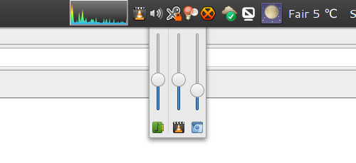

Volume control for Linux desktops featuring per-app sliders and OSD
I couldn't find a simple tray icon that allows to control multiple applications easily from the task bar. So I wrote my own.
The program is written in Python using GTK+. Bug reports and patches welcome!
It's not meant to be an replacement for a full-featured mixer application. If you're looking for that check out the excellent pavucontrol.

pavucontrolsudo ./setup.py install
data/apps.volctl.gschema.xml
to /usr/share/glib-2.0/schemas/ manually.
sudo update-desktop-database
sudo glib-compile-schemas /usr/share/glib-2.0/schemas/
or
sudo glib-compile-schemas
/usr/local/share/glib-2.0/schemas/
Available in AUR: volctl